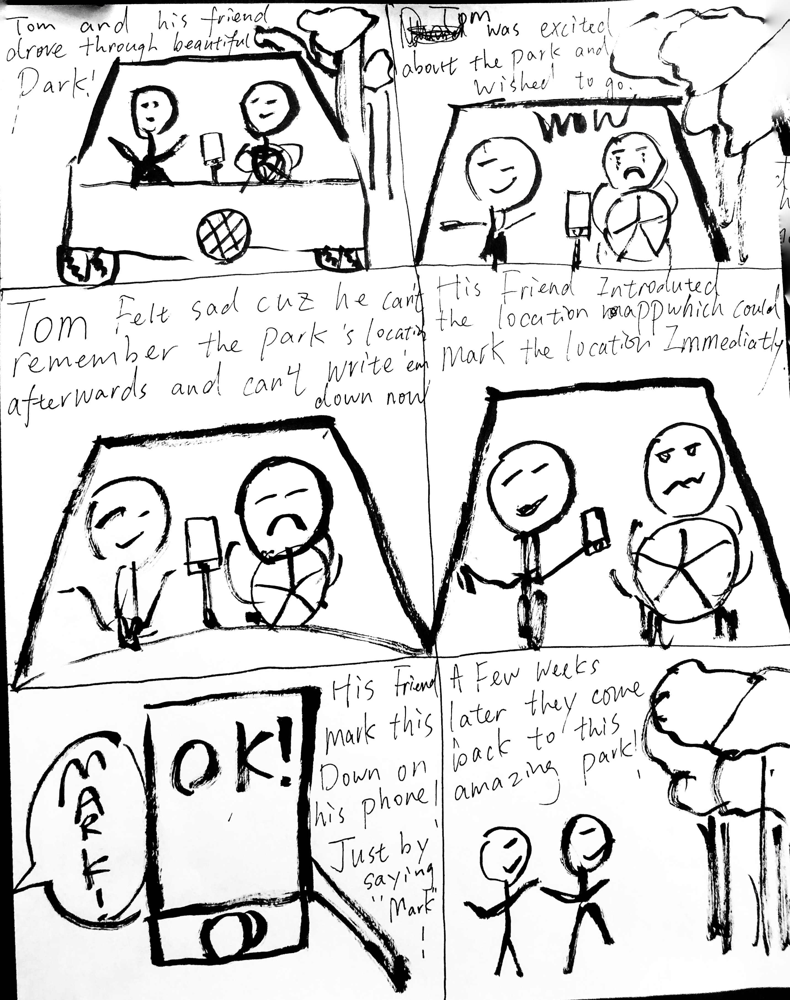
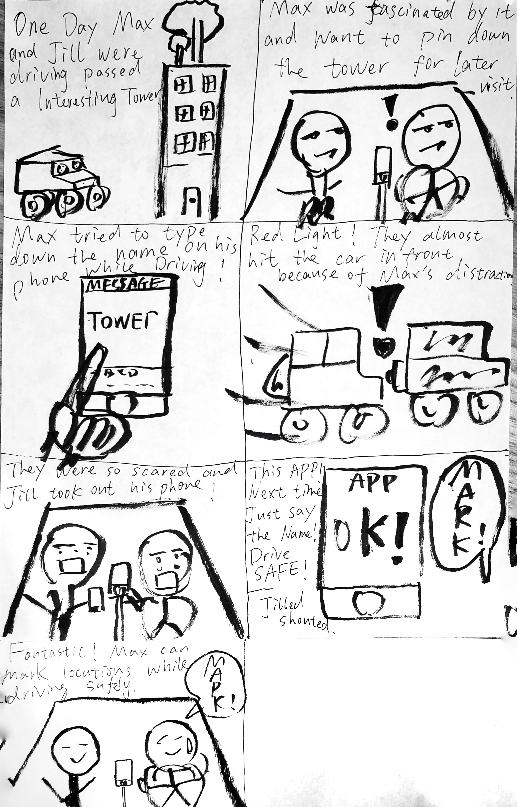
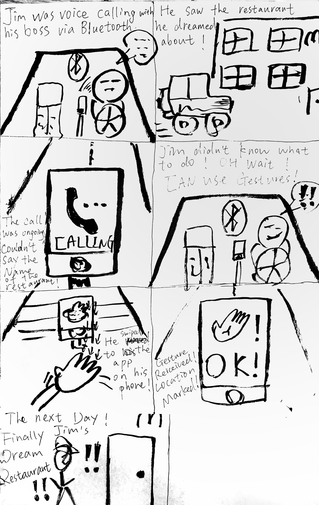

Mission Statement
To help users better discover their neighborhood and maximize their freedom from navigation apps while driving/walking.
Brife
Goal: Designing a solution that helps drivers to save current location for a future visit in a fast and safe way.
Duration: 8 weeks
Collaborators：Pu Zhang and Hongming Zhang
Role: UX Designer and Coder
Tool: InVision, Pen + Paper, Adobe Dreamweaver.
Skills: UX Design, Interaction Design, Needfinding, Interviewing, Prototyping, UI design.
Problem
Have you ever drive by a place that attracts your eye, and you want to visit on your next trip, but never happened because you can't find it anymore? Our app, the Mark, allows you to mark your favorite place with one tap so you can revisit them whenever you want.
Design Process
User Research / Needfinding
During this phase, we set out the research goal and identified who the target audiences are. In our case, we targeted college students as our main audiences so we conducted interviews on 10 UCSD students. We found out that most non-resident students fall into the scenario our problem statement. Most of out of state students and international students who are not quite familiar with the area have met the similar problem.
The Design Idea
We came up with MARK with 4 basic design ideas:
1. users are able to save the current location while ensuring safity (by tapping, voice control, gesture, etc.).
2. users are able to edit the saved location and add notes.
3. users can share their locations to their friends.
4. users can be nevigated to saved location without hassle.
The app requires the Location permission of the phone which allowed users save the current location. Due to the safity concern, user will be able to add notes of the saved location after friving. Considering most of people would need to have a nevigation app opened on the phone, our app need to be able to have voice command and/or gesture control (needs "display over other apps" permission on Andriod).
Storyboard
# 1
# 2
# 3
Wireframes
Prototype
_____________________________
A Short Video Introduces Our App
A Rough Implementation by using HTML, Css, JS, Node.js
(If you are using a phone, click here for a better experience)
This app is still under developing. The web application is a rough implement for some of the functions.